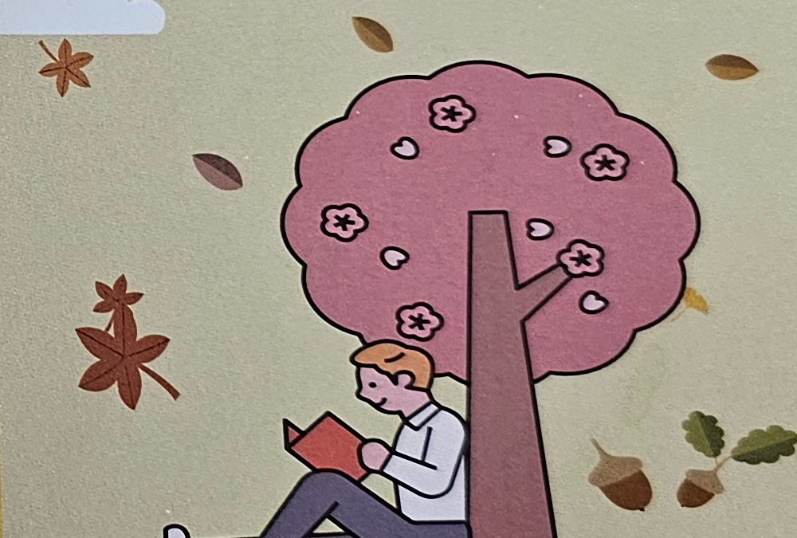

누구나 평생 배우고 성장할 수 있도록
장애인평생교육원 꿈터글방은 성인 장애인의 배움과 일상을 연결하는 평생교육 공간입니다. 문해·독서, 음악, 미술, 건강, 생활체육과 분반수업을 통해 각자의 속도와 가능성을 존중하는 교육을 이어갑니다.
함께 배우고 서로를 격려하며, 배움의 즐거움이 자립과 참여로 이어지는 따뜻한 공동체를 만들어갑니다.
01
존중하는 배움
학습자의 특성과 속도를 존중하는 맞춤형 교육을 실천합니다.
02
함께하는 성장
교사와 학습자, 지역사회가 함께 배우고 성장합니다.
03
일상으로의 연결
배운 내용을 생활과 자립, 사회 참여로 이어갑니다.